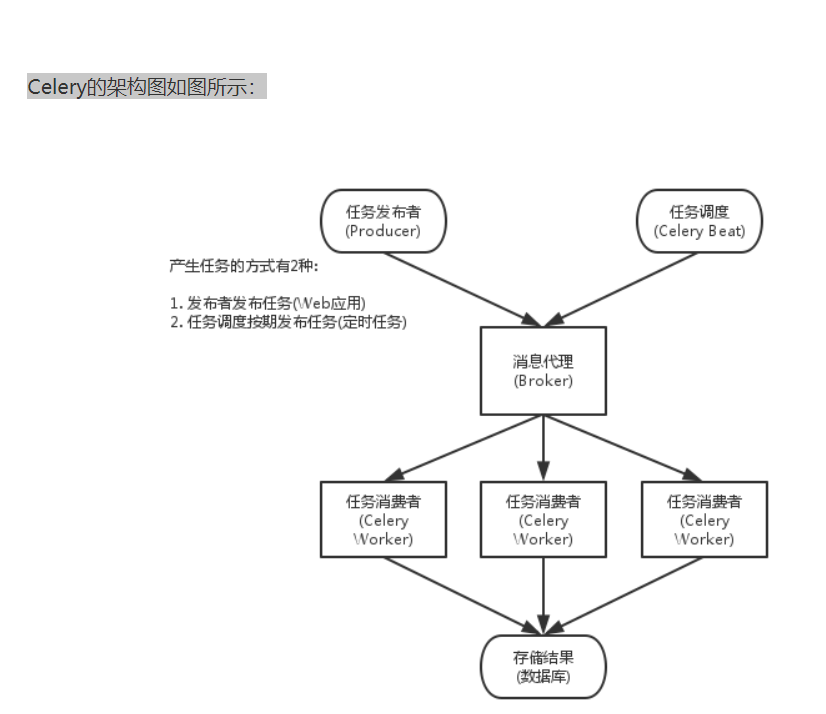

celery是专注实时处理和任务调度的分布式任务队列
2、简述celery的应用场景（1）、Web应用：当用户触发的一个操作需要较长时间才能执行完成时，可以把它作为任务交给Celery去异步执行，执行完再返回给用户。这段时间用户不需要等待，提高了网站的整体吞吐量和响应时间。
（2）、定时任务：Celery可以帮助我们快速在不同的机器设定不同种任务。
（3）、同步完成的附加工作都可以异步完成。比如发送短信/邮件、推送消息、清理/设置缓存等。
3、简述celery的运行机制 Celery Beat：任务调度器，Beat进程会读取配置文件的内容，周期性地将配置中到期需要执行的任务发送给任务队列。
Celery Worker：执行任务的消费者，通常会在多台服务器运行多个消费者来提高执行效率。
Broker：消息代理，或者叫作消息中间件，接受任务生产者发送过来的任务消息，存进队列再按序分发给任务消费方（通常是消息队列或者数据库）。
Producer：调用了Celery提供的API、函数或者装饰器而产生任务并交给任务队列处理的都是任务生产者。
Result Backend：任务处理完后保存状态信息和结果，以供查询。Celery默认已支持Redis、RabbitMQ、MongoDB、Django ORM、SQLAlchemy等方式。
4、celery如何实现定时任务？5、简述 celery多任务结构目录？
∦
6、celery中装饰器 @app.task 和 @shared_task的区别